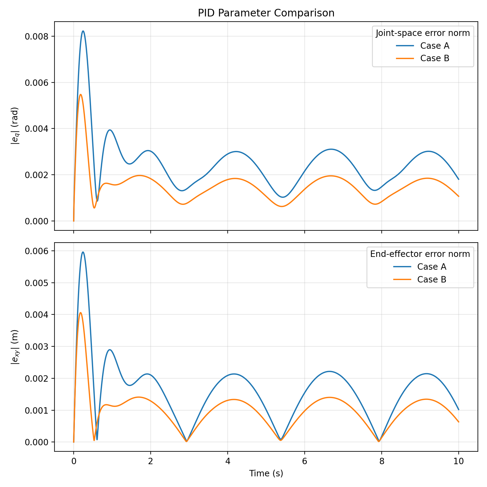
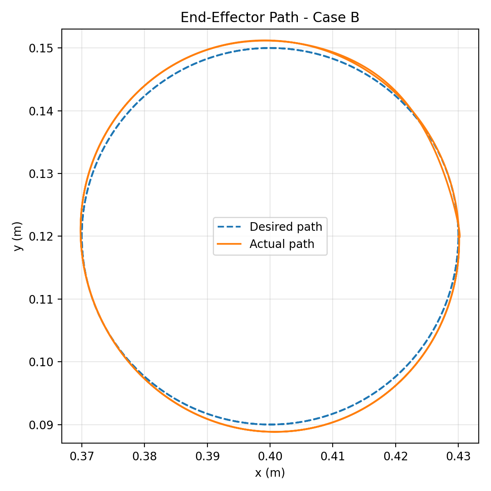
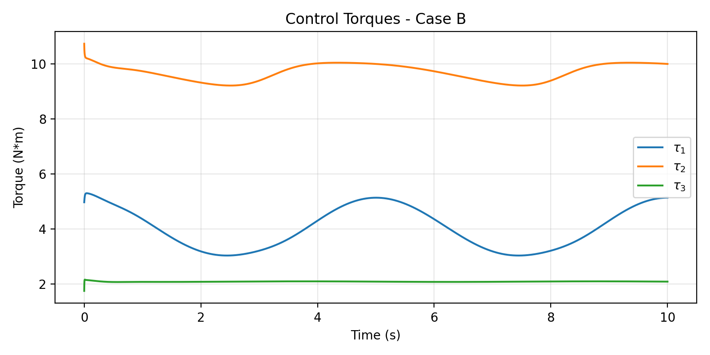
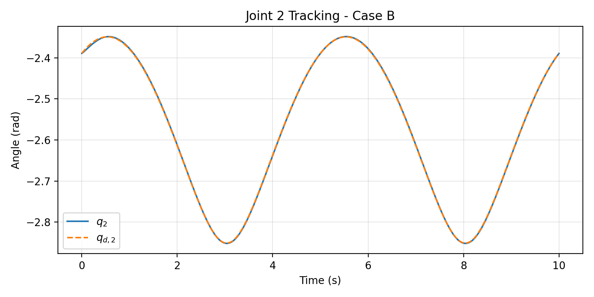
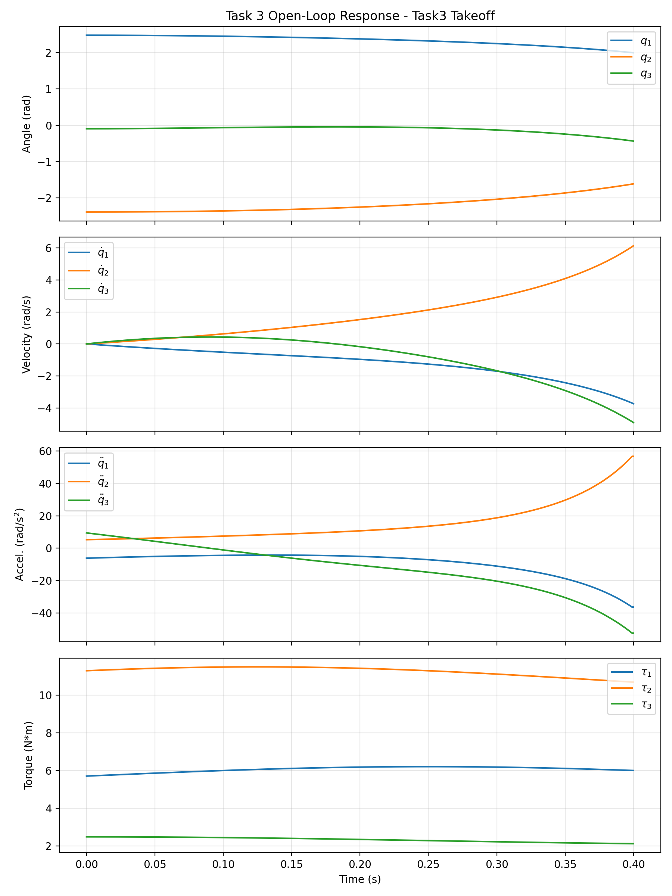
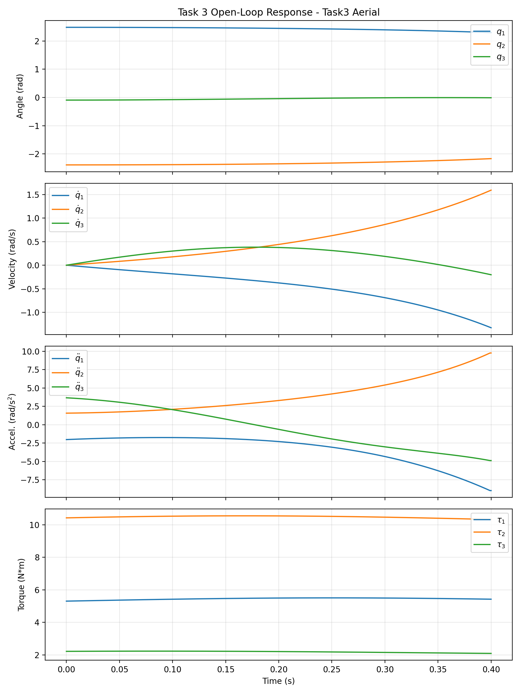

Modelling and PID control of a wheel-legged robot limb轮腿机器人单腿的建模与 PID 控制
NUS ME5402 Advanced Robotics · Part 2 individual project
新加坡国立大学 ME5402 高级机器人学 · 第二部分个人项目
One limb of a TRON 1-inspired wheel-legged robot is reduced to a planar 3R chain. I derived its D-H model, Jacobian and inverse kinematics, its Lagrange–Euler and Newton–Euler dynamics, simulated open-loop take-off and aerial phases, and designed a gravity-compensated joint-space PID controller that tracks a 30 mm circle with about 1 mm mean error.
将 TRON 1 式轮腿机器人的一条腿简化为平面 3R 串联机构，推导了 D-H 模型、雅可比与逆运动学，以及拉格朗日–欧拉与牛顿–欧拉动力学；仿真了起跳与腾空两个开环阶段，并设计了带重力补偿的关节空间 PID 控制器，使轮轴中心以约 1 mm 的平均误差跟踪 30 mm 圆轨迹。
Role:个人贡献： Individual project: modelling, derivations, code and report.个人独立完成：建模、推导、代码与报告。
Overview概览
The assignment is to model and control one limb of LimX Dynamics’ TRON 1 wheel-legged robot. I treat the limb as a planar 3R serial chain with a fixed hip and the wheel-axle centre as end-effector, then work through kinematics, dynamics and control. Every interactive panel on this page re-runs the coursework model in your browser: a JavaScript port of the Python code that reproduces its results to within 10−12.
课程要求对 LimX Dynamics TRON 1 轮腿机器人的一条腿进行建模与控制。我把这条腿简化为髋部固定、以轮轴中心为末端的平面 3R 串联机构，依次完成运动学、动力学与控制。本页所有交互面板都在浏览器中实时重新运行课程模型：Python 代码的 JavaScript 移植版，与原结果的相对误差在 10−12 以内。
Kinematics运动学
D-H table, forward kinematics, Jacobian and closed-form two-branch inverse kinematics.D-H 参数表、正运动学、雅可比与两分支解析逆运动学。
Dynamics动力学
Lagrange–Euler M(q), h(q,q̇), G(q); recursive Newton–Euler as a cross-check.拉格朗日–欧拉法得到 M(q)、h(q,q̇)、G(q)；递推牛顿–欧拉法交叉验证。
Open loop开环
Time-varying torques for take-off and aerial surrogate phases, 0.4 s each.起跳与腾空两个替代阶段的时变力矩，各 0.4 s。
PID controlPID 控制
Joint-space PID with gravity feed-forward tracks a circle; two gain sets compared.带重力前馈的关节空间 PID 跟踪圆轨迹，对比两组增益。
Move the limb, watch the Jacobian拖动这条腿，看雅可比如何变化
Move the joint sliders, or drag the orange wheel axle: the closed-form inverse kinematics returns the elbow-up or elbow-down solution that keeps the orientation φ. The shading is |det J| = l1l2|sin q2| over every axle position reachable at that φ; it drops to zero on the two singular circles where links 1 and 2 fold or stretch out. The ellipse shows the end-effector velocities produced by unit joint speeds.
拖动关节滑块，或直接拖动橙色轮轴：解析逆运动学会在保持姿态角 φ 的前提下给出肘上或肘下解。底色为该 φ 下所有可达轮轴位置的 |det J| = l1l2|sin q2|，在第 1、2 杆折叠或伸直的两个奇异圆上降为零。椭圆表示单位关节速度对应的末端速度。
Current pose当前位姿
D-H parametersD-H 参数
all axes parallel, αi = 0, di = 0各轴平行，αi = 0，di = 0
| Joint关节 | ai (m) | αi | di | θi |
|---|---|---|---|---|
| 1 · hip髋 | 0.15 | 0 | 0 | q₁ |
| 2 · knee膝 | 0.30 | 0 | 0 | q₂ |
| 3 · ankle踝 | 0.25 | 0 | 0 | q₃ |
Take-off and aerial phases, open loop开环的起跳与腾空阶段
The equations of motion M(q)q̈ + h(q,q̇) + G(q) = τ come from Lagrange–Euler, with Coriolis terms from Christoffel symbols, and are cross-checked with recursive Newton–Euler. With a fixed base and no ground contact, as the assignment specifies, take-off and aerial phases share the same equations; they differ only in the applied torque: gravity at the start pose plus a sinusoidal surge, strong for take-off and gentle in the air. Both 0.4 s runs are replayed below, slowed down ten times.
运动方程 M(q)q̈ + h(q,q̇) + G(q) = τ 由拉格朗日–欧拉法导出，科氏项由克里斯托费尔符号得到，并用递推牛顿–欧拉法交叉验证。按题目要求固定基座、不含地面接触，起跳与腾空阶段的方程相同，区别只在施加的力矩：起始位姿的重力力矩加上一段正弦增量，起跳时强、腾空时弱。下面以 10 倍慢放回放两段各 0.4 s 的仿真。
At the start pose q₀起始位姿 q₀ 处
q₀ = [2.483, −2.389, −0.094] rad
- M(q₀)
- [0.238 0.261 0.074]
[0.261 0.375 0.099]
[0.074 0.099 0.035] kg·m² - G(q₀)
- [5.106, 9.995, 2.085] N·m
- Integrator积分方法
- semi-implicit Euler, Δt = 1 ms半隐式欧拉，Δt = 1 ms
Joint 2 alone needs about 10 N·m just to hold the limb still. This number decides the control design in Task 4.仅关节 2 保持静止就需要约 10 N·m，这个数决定了任务 4 的控制设计。
Peak joint speed over 0.4 s0.4 s 内的峰值关节速度
Joint histories关节时程
solid: take-off · dashed: aerial · line marks playback time实线：起跳 · 虚线：腾空 · 竖线为当前回放时刻
Tune the controller and re-run the simulation调整控制器，重新运行仿真
My first design, plain PID with a 10 N·m limit, missed the circle by 227 mm on average: holding joint 2 against gravity takes about 10 N·m on its own, so the whole torque budget went into carrying the leg. Feeding the model’s gravity vector forward, τ = G(q) + Kpe + Ki∫e + Kdė, leaves the PID terms only the tracking error. Pick a preset or move a slider: each change re-runs the 10 s, 1 kHz simulation in your browser, in about 0.1 s.
最初的设计是 10 N·m 限幅的纯 PID，平均偏离圆轨迹 227 mm：仅让关节 2 克服重力就要约 10 N·m，整个力矩预算都用来托住这条腿。把模型的重力向量作为前馈加入，τ = G(q) + Kpe + Ki∫e + Kdė，PID 项就只需处理跟踪误差。选择预设或拖动滑块，每次修改都会在浏览器中重新运行一次 10 s、1 kHz 的仿真，约需 0.1 s。
“Payload ×” scales the mass of link 3 in the simulated limb only; the controller keeps the nominal model for inverse kinematics and gravity feed-forward. The coursework did not test this mismatch; it is added here to show how much the design relies on the model.“负载 ×”只改变被仿真腿的第 3 杆质量，控制器的逆运动学与重力前馈仍使用名义模型。课程作业未测试这种模型失配，这里补充它，用来说明该设计对模型的依赖程度。
End-effector error末端误差
|x − xd| in mm · grey: case B for reference|x − xd|，单位 mm · 灰线为方案 B 参考
Joint torques关节力矩
dashed: torque limit虚线为力矩限幅
Gains, gravity feed-forward and payload增益、重力前馈与负载
Each heat-map cell is one full 10 s run with Kp and Kd scaled from case B (Ki fixed). Without feed-forward, no gain pair comes close: the torque goes into holding the leg up. The payload curve shows the cost of relying on the model: each 1 % error in the link 3 mass adds about 1.9 mm of mean error, and above +10 % joint 2 hits its 11 N·m limit for most of the run.
热力图每格是一次完整的 10 s 仿真，Kp 与 Kd 按方案 B 缩放（Ki 不变）。没有前馈时，无论哪组增益都差得很远：力矩都用来托住腿了。负载曲线则显示依赖模型的代价：第 3 杆质量每偏差 1 %，平均误差约增加 1.9 mm；超过 +10 % 后，关节 2 在大部分时间都顶在 11 N·m 限幅上。
Mean end-effector error (mm)末端平均误差 (mm)
81 runs per map · outlined cell: case B每张图 81 次仿真 · 描边格为方案 B
Payload mismatch负载失配
case B gains · bars: share of time joint 2 is saturated方案 B 增益 · 柱：关节 2 处于饱和的时间占比
Figures from the report报告中的图






What the model does and does not cover模型的适用范围
- A reduced-order surrogate, as the assignment allows: one limb, motion in a plane, fixed hip, no ground contact. It is not a full jumping model.按题目允许的降阶替代模型：单腿、平面运动、髋部固定、无地面接触，不是完整的跳跃模型。
- A circle in (x, y) alone does not define a pose of a 3R limb, so the end-effector orientation is held at φ = 0 and the elbow-down IK branch is followed continuously.仅给出 (x, y) 圆轨迹不足以确定 3R 腿的位姿，因此末端姿态固定为 φ = 0，并连续跟随肘下逆解分支。
- The interactive panels, gain sweep and payload study were added for this page. Numbers quoted from the report (Tables 4–6) are unchanged.交互面板、增益扫描与负载研究为本页新增；引自报告的数字（表 4–6）未作改动。